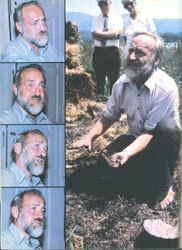
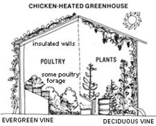

PERMACULTURE... ECOSYSTEMS FOR THE FUTURE
Our recent Plowboy Interview (in MOTHER NO. 62, page 16) with biointensive gardener John - the California horticulturist who produces surprisingly high yields of vegetables on small parcels of land at his experimental mini-farm - outlined a frighteningly bleak future for agriculture and for food production in this country. Jeavons revealed, in that article, his belief that the earth is rapidly becoming a desert and losing its fragile layer of topsoil at an alarming rate . . . while product yields continue to fall despite the ever-increasing input of energy that agribusiness methods demand.
And although this critical problem now occupies researchers and ecologists all over the world, it seems - at least up to this point - that only a few people (Jeavons among them) have been able to present feasible solutions to our current self-destructive system of commercial agriculture. Therefore, everyone here at MOTHER was excited to learn about Dr. Bill Mollison, an Australian environmental scientist who has coined the term "permaculture" to refer to his concept of a self-sustaining, consciously designed ecosystem. Mollison envisions regional systems containing integrated, self-perpetuating plant and animal species . . . assemblies that will literally operate themselves on the principles of stable diversity, energy efficiency, low maintenance, and high yield.
Unlike many other theorists and soothsayers, though, Mollison has an armory of facts and evidence to support his futuristic vision. In fact, the former university lecturer now lives in a metaindustrial village called Tagari - in the northwest corner of Tasmania - where he and his colleagues are busily setting up and demonstrating functional models of their ideas. Besides providing inspiration for the hundreds of permaculture associations that are springing up all over Australia, Tagari residents have also formed their own seed company and the Permaculture Institute . . . which is responsible for an international consultation service. The community is also training a team of designers, who are available - on a consulting and teaching basis - to individuals, public agencies, and disadvantaged groups. In short, Bill Mollison lives what he talks about... and perhaps that's what makes the Australian's arguments so convincing.
MOTHER had an opportunity to meet Bill Mollison recently, when he visited our western North Carolina neighborhood on one leg of his current world tour (which is being cosponsored by the International Tree Crops Institute, the Farallones Institute, the New Alchemy Institute, the National Center for Appropriate Technology, and the World Future Society). After the public lecture and workshop, MOTHER staffers Larry Hollar and Jeanne Malmgren spent several hours with the dynamic man, to delve more deeply into the philosophy and techniques of permaculture. The following transcript was edited from that encounter.
Whether you're an organic gardener, an ecologist, or someone who's just plain concerned about the uncertain future of commercial agriculture, you're sure to find Mollison's insights fascinating . . . simply because permaculture does seem to represent a viable way out of the crisis in food production and supply that we're now facing.
PLOWBOY: Bill, it seems ironic that - being a native of a small, isolated island - you're designing ecosystems that have worldwide applications. You must have had years of agricultural training while preparing for such a monumental task.
MOLLISON: Actually, I haven't had a great deal of institutional horticultural education at all ... but I suppose my background has helped prepare me for my current involvement with land systems.
I'm a sixth-generation Tasmanian, you see, so the peculiar sort of dual marine/bush orientation - common to natives of that land - is in my blood. Tasmania is largely an agricultural state, but it also contains a good bit of heavily forested territory. About half the island isn't even yet fully explored, and I spent a lot of my childhood trudging the uncharted areas.
I grew up very independently, and without much formal training. My father died when I was 14, so I left school to help run our family bakery. As a result, I escaped having to spend a lot of hours in a classroom . . . and I think such a lack of traditional education is almost essential for anybody who does anything creative. Later in life - at about age 37 - I did go to the University of Tasmania and complete a degree . . . but I did so mostly to develop a bit of mental discipline. I also taught there, for some ten years, as a lecturer in Environmental Psychology.
My real education, however, has come from the variety of jobs I've held. For most of my life I've been either a fisherman or a fur trapper. I also - at different times - ran a market garden and a dairy.
I've been involved in wildlife and marine research, too. For several years, I worked with the Wildlife Survey Division of the Commonwealth Scientific Industrial Research Organization, or CSIRO. We tackled Australia's large-scale pest problems, such as the locust plagues and the rabbit scourge. Following that job, I dabbled in fisheries research for several years . . . mainly concerning the estuaries between sea and fresh water, although I did a lot of inland lake work as well. And then - at various times - I've gone into the forest to become a true bushman ... felling and milling trees, locating new forest stands, and seeking new trails through the wilderness.
PLOWBOY: And did all your contact with the wilds have any effect on your perceptions of our modern agricultural system?
MOLLISON: Oh yes! Everything I did, either in research or in fieldwork, indicated that there was something fundamentally wrong with modern farming methods. For instance, every problem I found in commercial agribusiness was actually caused by the industry itself. Usually - when a farmer called in the CSIRO for a consultation - the results of our investigation pointed the finger straight at the grower him- or herself!
As I saw the same situation occur time and time again, I gradually came to the conclusion that most contemporary crop-raisers must be doing things the wrong way. So my last few years with the CSIRO were spent in the forest, observing the plant and animal species on location . . . and there I learned that everything in nature is self -controlled and self -balancing.
You know, a lot of modern thought suggests that the planet - as a living organismic - seeks to protect itself by rejecting any species that causes it harm. For instance, if cattle damage part of the earth, the harmed region will respond by growing thorn bushes and poisonous plants, thus rejecting the animals. Well, I think we - the members of the human race - are perilously close to being rejected by the earth in that same way . . . and quite rightly so, since we've created some terrible damage.
PLOWBOY: How did you consolidate such early observations into your theory of permaculture?
MOLLISON: Well, I guess the germ of the idea had been lurking in my subconscious mind for along time. For instance, I remember writing in a diary, many years ago, that we should be able to construct environments. But the theory didn't come to full consciousness until around 1969. I was thinking about the whole business of energy and of my opposition - as a conservationist - to strip mining, deforestation, and other forms of earth exploitation . . . and I concluded that it was time to devise a better way.
Actually, I guess it was rather a brave step to say, "Let's apply the principles of environmental science to our production systems." Up to that point, those principles had been taught as revealed knowledge . . . that is, a person would go into the forest, find relationships among the species, and formulate a principle or a law based on such observations. Then the individual had to show off the "new" principle, so he or she would say, "Look, everybody, this is how it works."
But no one, at that time, ever thought of taking such a relationship and consciously applying it, making it part of a design. The idea was a real mind twist, something that caused an almost physical change within my brain.
PLOWBOY: How were your new ideas received by traditional agriculturists?
MOLLISON: Well, I can only say that there was a stunned silence at first, since the concepts were seen as being terribly radical. The ideas were intuitively accepted very quickly, though, by nonprofessorial people. And many of the enthusiastic responses came from women. In fact, 70 to 80% of the letters I now receive come from women . . . they seem to see immediately that we've got something here. On the other hand, scientists - male or female - don't see, mainly because they're used to teaching a passive and nonreactive system. Such individuals don't teach reactivity, and they don't practice activity. Everything is on the blackboard, and nothing is in the garden.
PLOWBOY: Let's see if we can define the whole idea of permaculture. Exactly what is your theory all about?
MOLLISON: The word "permaculture" refers to an integrated, self-sustaining system of perennial agriculture . . . which involves a large diversity of plant and animal species. A permaculture is really a completely self-contained agricultural ecosystem that is designed to minimize maintenance input and maximize product yield. In a permaculture, little wheels or cycles of energy are set up . . . and the system virtually keeps itself going! Essentially, it's a living clockwork that should never run down . . . at least as long as the sun shines and the earth revolves.
I like to call permaculture a "humane technology", because it's of human dimensions. By that, I mean that it deals in a very basic way with simple, living elements . . . so it's available to every man and woman. Permaculture doesn't involve some sort of complicated technology, as does even an electricity-producing windplant. Instead, it's a bio-technology . . . which people can intuitively handle .
After all, permaculture deals with living systems . . . and since man himself is a living organism, he can readily comprehend it. It's a concept that can be very easily transplanted or given away to anybody, too. In that sense, it can never be patented - because it's so readily available - nor should the idea be patented.
PLOWBOY: How, specifically, is permaculture different from conventional modern agricultural techniques?
MOLLISON: I can say in a word how it's different: It's consciously designed . . . and that alone makes it something brand-new. There's no real design in modern agriculture, you see . . . there doesn't seem to be any evidence of planning or thought in it at all!
The Chinese, for instance, have recently "modernized" their farming methods - that is, they went from hand tilling and fertilizing with natural manures to machine and flame weeding and fertilizing with artificials - and they increased their energy input by 800% in the process. Now they've gone beyond that and are heading toward an increase of 1,000%! And all that extra expenditure of energy produced an initial yield growth of only 15% . . . a figure that's now declining rapidly. In fact, it now looks as though productivity might even fall below its original level!
Here in the United States, all the established agricultural systems - such as the wheatfields of Kansas, the cornfields of North Carolina, and the orchards of California - are aberrant systems . . . and they're perishing as I speak. California, in fact, is rapidly turning into a desert. Modern agriculture, you see, can be summed up in only one statement: It destroys its own basis. It has already destroyed 50% of the world's soil . . . and, of the remaining 50%, about 30% will be disappearing in very short order. The problem with today's agricultural techniques is that-by ignoring the possibility of any design input - they fail to deal with interrelated functions.
One of the great principles of natural systems is that diversity and stability are directly linked. And if you're going to create a stable system - that is, one that will survive - you must provide for some diversity within it. Now creating diversity doesn't mean simply putting a lot of different plants in your garden. That's a diversity of species, yes . . . but it doesn't make your garden necessarily a stable one. What does create stability is a diversity in the relationships between species.
And that is the basis of permaculture: to see how many interacting relationships one can build into an agricultural setup.
PLOWBOY: Besides providing a high number of such functional connections, what are some of the other goals of a permaculture design?
MOLLISON: As I mentioned before, the system should be self-supporting . . . that is, it shouldn't require the addition of any external energies to operate. It should also be self-steering, requiring a minimum of input from the designer after the design has been implemented. Finally, it should enrich the people in it, and they should enrich it. In short, a permaculture should be nothing less than a Garden of Eden. Now that may sound like a pie-in-the-sky goal, but I really believe it to be an achievable objective for the whole world . . . and the only things needed to reach it are human energy and intellect!
Obviously, though, we'd just about have to reverse our present mind set to bring about such changes. In fact, I think a revolution in thinking would be the proper word to use . . . in the same sense as Masanobu Fukuoka uses it in his book, The One-Straw Revolution. It's a move toward good stewardship of the earth and toward a sane society. Our present society, you see, is in sane, and the stewardship we practice is horrific . . . in fact, we don't actually care for our earth at all, but exploit our nonrenewable resources and waste our renewable ones!
Permaculture, however, represents an educational process that can lead us away from irresponsible thinking. Anyone who works with a permaculture goes through a learning experience that is complex and interdisciplinary . . . the very things that traditional education is not . In essence, it's an intellectual exercise. Instead of wearing out our bodies in the garden, we use our minds. For that reason, permaculture appeals to people who normally wouldn't be interested in the hard physical labor of gardening - especially double-dig gardening with compost - since the real labor of developing a permaculture is not in doing it, but in thinking about what one is going to do. One's major energy, then, is devoted to the initial designing of the system, not to the maintenance of it.
There are two books that point the way toward this new kind of thinking . . . and they are, in my opinion, the only texts that should be issued to student agricultural designers: Fukuoka's book, which I've already mentioned, and a new volume - just published by Viking Press - called Entropy: A New World View by Jeremy Rifkin. (EDITOR'S NOTE: Turn to page 56 in this issue for a closer look at Rifkin's work.)
PLOWBOY: In your own second book, Permaculture Two, you introduced two ways of looking at the land that were based on Fukuoka's principles of nonviolent cultivation and natural farming. What are those contrasting views, and how do they relate to your work?
MOLLISON: The underlying philosophy of permaculture is the same as Fukuoka's: working with the land, not against it. It's essentially a matter of using the principles of Aikido, the Oriental defense art, on the landscape . . . allowing one to turn adversity into strength and use that energy positively. You're right, there are two very distinct ways of looking at the land. One is to ask, "What can I demand this land to do?" That viewpoint - which is the prevailing philosophy of commercial agriculture - can lead only to the use of force on the fragile soil. A permaculturist asks instead, "What does this land have to give me?" Anyone who asks that question will naturally work in harmony with the earth to produce a sustained ecology. That's what we try to do in permaculture: We adopt a design or strategy that rolls with the strengths and weaknesses of the land, to ultimately make the system stronger. And achieving that goal will naturally strengthen us, too, since our survival depends on the health of the earth.
What practitioners of permaculture do, then, is cooperate with the earth and avoid the use of force. In accordance with Fukuoka's "do nothing" system of farming, we use no machinery . . . no digging or slashing machines, which would only disturb the earth and create an imbalance by the introduction of force. And this is the point that I must make time and again: If you use energy in any way non productively, then you are causing a chaotic condition, either in your garden or in your society. Permaculture involves a thought process in which you design systems to harmonize with nature, not to oppose it.
PLOWBOY: Let's talk some more about the role of design in a permacultural system. Just how important is it?
MOLLISON: It makes all the difference in the world! Look at Fukuoka: That man, at 74, controls 12 acres at a higher productivity than any other farmer on earth . . . and he does it all on foot, with no machines whatsoever! And even his design could be improved upon. The point is that, by applying any sort of temporal and spatial pattern, one can literally achieve wonders in the product yields of a system.
PLOWBOY: What are some of the design criteria used in the formation of a permaculture? I mean, exactly how do you go about planning one of these microcosms?
MOLLISON: First of all, you take stock of all the external factors that must be worked with - such as climate, topography, soil, and water supply - and then choose plant and animal species that are highly suited to that particular set of factors. And this is the point at which permaculture must radically differ from commercial agriculture. If you want to - particularly here in the Americas - you can sit down and design a very productive piece of swampland containing people, ducks, invertebrates, and so forth . . . because swamps are naturally productive areas, and such a system will produce a vast number of useful things. But modern agribusiness experts would advise draining the swamp and making it into a cattle fodder system! That's far too wasteful . . . in effect, it turns a natural area of high productivity into an artificial place of extremely low productivity.
When you're developing the spatial design for a permaculture, you literally start at your own doorstep and work out from there . . . all the way to the horizon! The ground plan - starting from the center, where the dwelling and other principal buildings are located - involves concentric zones, with each species placed so as to maximize its usefulness in the ecosystem. The arrangement should be based on the principle of greatest accessibility: The species that need your attention or control most often - for watering or harvest, for example - are best located closest to the dwelling site . . . while plants and animals that need little or no attention are likely to be on the periphery of the system. Zone placement, then, governs the energies that are generated within the system, so that the whole "structure" operates on the least amount of labor possible.
Sector placement, on the other hand, governs the energies entering the system from the outside: both disruptive forces like fire or flood . . . and beneficial ones like sunlight and wind. Such factors can be either screened out or filtered into the system, according to the design. The aim is to channel external forces in such a way that they'll efficiently serve the needs of an evolved permaculture.
Now a fascinating concept comes into play here, called the "edge effect". Ecologists have long recognized that the area of intersection of two systems is a highly complex - and extremely productive - region where species from both systems can coexist comfortably . . . along with other species that are peculiar to the "edge" itself. Gross photosynthetic production is higher at the interface, and this richness of plant and animal life is very valuable to us as permaculture designers. So - when we plan the zones and sectors - we try to allow for a maximum area of interface between land and water, tree and lawn, open country and dense vegetation.
That's the basic plan. Then - having set up the zones, sectors, and interfaces - the designer tries to make the highest possible number of functional connections among the species he or she has to work with. Each plant or animal should - in itself - serve a number of functions, and it should also interact with other species in a variety of ways.
PLOWBOY: Why is the principle of multifunction so essential?
MOLLISON: Because it's part of the system's array of checks and balances. A single species can operate in an almost infinite number of ways, you see, and its yield is directly controlled by the designer's discovery of all the ways in which it can function. His or her imagination, then, can literally take the lid right off what are commonly presumed to be the maximum possible yield figures for any particular species.
Here's an example I like to use: I call it my chicken model. Take four separate elements: a hen coop, a greenhouse, a pond, and a small forest. Now you can have these on your farm . . . and place them wherever you like, in no particular relationship to each other. In that situation each one functions individually, and they all consume energy. But if you make the forest a forage range for the chickens by putting the coop in or near that forest . . . if you attach the greenhouse to the front of the chickens' shelter . . . and if you set the pond in front of the greenhouse - as illustrated in Permaculture Two - well, then you've got a nice system of interrelating functions, the familiar checks and balances.
Just look at all the ways you produce energy in this system: the chickens' body heat, the direct sunlight that reflects off the pond and hits the greenhouse, the radiation of the trees at the rear, the decomposition of chicken manure, and on and on. If you sit down and sketch this system out, you'll find that it's fantastically complex - with thousands of functional interactions - and will run itself . Operating on its own energy, the system automatically switches on and off. As the sun gets high in the sky, the greenhouse absorbs more heat . . . so the chickens get hot and go out, thus removing the source of animal heat. While they're outside, the birds forage in the forest and leave their manure to enrich the soil. After dark, of course, they'll go back inside to keep warm . . . taking their body heat with them.
Look at each chicken by itself and the variety of functions it's performing in this one simple model: In the coop the hen operates as a radiator, an egg producer, and a manurial system. In the forest the bird acts as a self-forager, a tree-disease controller, a fireproofer, a fertilizer producer, and a rake. One can use chickens to do quantities of useful work . . . in fact, I don't know what you can't do with chickens, once you get started!
PLOWBOY: The idea, then, is to design an ecosystem carefully . . . and once it's established, let it function almost entirely on its own?
MOLLISON: Exactly. The ideal, of course, would be a system that requires no maintenance, which is a really difficult possibility to accept. You know, when the explorers and missionaries first landed on this continent, they were shocked to find the natives sitting indolently under trees . . . but the idea that you have to work to live is a strange one to aboriginal people.
PLOWBOY: But what about such concerns as pest control?
MOLLISON: Well, most of that problem is solved by the very design of the system. Broadly speaking, the diversity that is so important in permaculture is its own most effective pest control. The greatest cause of pests in monocultural cropping is the fact that farmers set out a whole field of corn or soybeans, alone and unprotected from the plant's natural predators.
But the functional diversity of a permacultural ecosystem insures the operation of certain controls, since the designer turns the naturally antagonistic and competitive relationships among plants and animals to advantage. A complex system - with a great variety of species - is simply less susceptible to pest infestations than is a single-crop system.
In our Tagari gardens, we use several different species to deal with potential pest problems. Ducks, for example, are effective against snails and slugs. In some areas of Australia we have so many grasshoppers that people can't garden without the pest-destroying help of guinea fowl . . . so they have to site their plots within a guinea fowl range. I also make straw and rock piles for lizards . . . since the reptiles will eat some grubs that birds won't touch.
Another predator that I encourage in my garden is the tree frog . . . it will devour both cabbage moth larvae and pear slugs. To attract the frogs, I simply make little ponds out of shallow pits lined with plastic and hollowed-out tires. I dig the ponds wherever I need them - near the pear or apple trees and among the cabbages - then dump in a couple of gallons of tree-frog tadpoles.
We've also found that mulch is effective against such insects as cutworms. And, since most good mulches contain many different kinds of fungi, the material provides a sort of "battleground" in which harmful organisms simply eat each other up. I think one has to play around with all sorts of natural controls, as we've done . . . and will eventually hit upon the ones that work best in a specific area.
PLOWBOY: Isn't there a tremendous financial outlay required to set up a permaculture, with such a diversity of species?
MOLLISON: Well yes, the initial cost can be steep if you're the only person involved . . . and at one point I was. Originally, I spent about eight or nine hundred dollars, in species purchases alone, to set up a half-acre! But - once I was done - that piece of land didn't cost another cent in equipment or maintenance. So there's a rapidly decreasing financial input involved.
The best way to establish a permaculture, though, is to share the expense among a number of people. If you have some sort of association, you can obtain the necessary species at a low cost to each individual . . . and can also share whatever species you already have with one another. For example, I now find that one of my friends will already have specimens of any of six or seven hundred plant and animal types I might need.
PLOWBOY: Let's talk about houses and buildings . . . what sorts of structures would fit into an evolved permaculture?
MOLLISON: Any buildings that are part of an ecosystem should agree with that system's overall principle of minimal energy usage. To that end, there are basically two choices: One either makes adjustments to existing structures, or constructs new dwellings.
The "reactive house" concept is one pattern that can be employed to retrofit older dwellings. The aim of such a design is to reduce - or even eliminate - the need to use external energy for climate control. In this sort of housing, outside windbreak plantings protect the structure from cold winds . . . external walls are covered with insulating vine crops . . . a solar-collecting greenhouse is attached to the sunny side of the building . . . all walls and ceilings are well insulated. . . and so forth.
There are also lots of exciting things being done with underground and earth dwellings. Furthermore - after I finish my tour of the United States - I'm going to visit a West German named Rudolf Doernach, who "grew" his own house: a unique biostructure composed of an igloo-shaped steel-and-timber frame that's grown over with leafy evergreen vines. The building is heated with compost . . . and it keeps the occupants quite warm, even in the cold European winters! "Plant houses" like Doernach's - which literally spring up out of the ground - not only make useful human dwellings but can also provide warm livestock shelters.
PLOWBOY: Bill, so far you've referred to permaculture only as a rurally oriented concept. What relevance - if any - do your ideas have to the millions of people who live in crowded nonagricultural environments?
MOLLISON: I've done quite a lot of design work in inner city areas, believe it or not . . . most often with unemployment coops and community groups. Our cities are really in a crisis situation, because they were set up to exist only as dependents of physically distant food-producing ecologies, and simply can't survive on their own. So we'll have to do a fast job of designing in urban areas if we're going to save the cities.
Actually, though, I find that - more and more - inner cities are becoming surprisingly active agricultural areas. Earlier in this trip, I worked in the Los Angeles suburbs of Lynwood and Watts . . . and what I saw there foreshadows what will be happening all over the world in ten years. Those people are more likely to make an effort to do something about their circumstances, because they have an immediate need . . . the edge of the sword is closer to them. Many inner city residents can't afford petrol or food today - a situation that will become all too common in other areas quite soon - so they're forced to grow their own supplies now. As a result, there are actually more gardens per capita in Lynwood and Watts than in any other part of Los Angeles. It's strange . . . the Third World exists within the frontiers of the Western world, as well as without.
Anyway, I think we can reform the cities. I'd like to have a chance to work on great, tall skyscrapers . . . they're nothing more than huge, unused greenhouses that could produce a tremendous amount of energy on their own. It would be possible to grow a lot of useful crops in such buildings . . . and in urban park areas that are now used only for ornamentals. All sorts of cluster-title and land-owning co-op systems could be devised to allow more and more city dwellers to produce their own food.
PLOWBOY: In Permaculture Two you stated that the only sane response to the insanity of our postindustrial age is "to gather together a few friends and commence to build the alternative, on a philosophy of individual responsibility for community survival". Is this the motivation behind the community you've formed in Tasmania?
MOLLISON: Indeed it is. I think that total personal self-sufficiency is an extraordinarily stupid approach to existence. We all need one another - as individuals and as groups - to set up functional interconnections. Human beings, you see, need what a garden needs: a lot of diversity in functional relationships.
What we're working toward at Tagari is a system of regionalism - based on our individual self-reliance - without the defended boundaries so common nowadays. Our group is rather small, but we maintain multilocation activities: We're operating in deserts, in tropical rain forests, in cool temperate areas, in the sea, and in the cities. We believe that all the elements of life on earth are interconnected. Not only is no man an island, you see, but no species is an island.
PLOWBOY: How big is your community?
MOLLISON: At the site where I live with my family and friends, there are only eight of us. But we have alliances with several other similar groups, bringing the total number of Tagari members to about 30. And then we have alliances with many hundreds of other groups in Australia . . . publishing and distribution alliances, training and design alliances, genetic species alliances, and seed collection alliances. Through just this sort of system of linking connections, we foresee the emergence of what might amount to an alternative nation . . . which will be global . But, of course, we can't let any one of the units get too big, or it might become oppressive. If that should happen, we'd have to drop it from the network . . . and it would be unable to survive alone, without those vital interrelationships.
PLOWBOY: Do you think there's an optimum number of members, then, for the ideal community?
MOLLISON: That's an interesting question, and the answer depends on what the function of a particular community is. I would suggest that we begin in tiny groups of five or six . . . but then these little units would later need to coalesce into groups of 30 or so and make a settlement. Finally, you'd need to form a larger tribe of about 200, to insure enough genetic diversity for the survival of the race.
So what I'm doing while I'm traveling on this tour is setting up connections. I hope to leave a string of new permaculture groups behind me as I go. The associations are actually self-forming - all I do is introduce the ideas and get them started - and self-run: There's no central secretariat or anything like that. What we want is not a bureaucracy, but an interconnected system of functional links . . . such as seed exchanges and reciprocal resource distributions. The associations can operate very efficiently on their own. In fact, I don't even know what most of them are doing . . . which is fine, as long as they're out there putting things right.
PLOWBOY: Is Tagari open to new members?
MOLLISON: Oh, sure. We'll accept up to 30 members at each location within the community . . . but we plan to stop expansion altogether at a total size limit of about 200 people. So it is open - for a finite period - at several locations. We take in some seasonal workers, as well. And we do have lots of interesting work going on. Actually, functions are split within the community: Some of us work in publishing the permaculture books, others work in information dispersal, and I work - along with several others - in design and networking. In addition, a number of us are involved in setting up alternate forms of property ownership. We now have quite an active land bank system, through which we acquire farms, houses, and other buildings and then parcel out stewardship of the properties.
PLOWBOY: And you're also educating permaculture designers?
MOLLISON: Yes, and they're trained to design to the very limit of their intellect, to apply the principles of functional connections to their plans. In that sense they're a new breed, totally different from traditional landscape architects or agricultural designers. We plan to train them initially in Australia and then send them out to teach regional courses to other people . . . thus we'll be setting up an expanding pyramid of functional design knowledge.
And it appears we're already making inroads into traditional thinking patterns . . . 60,000 copies of our books have been sold in Australia, and there are permaculture associations popping up in every state of that nation. The idea is also beginning to enter the establishment, it seems, through the formal educational system. One agricultural university and one technical college now offer courses in permaculture. A lot of "respectable" scientific associations are linking up with us, too . . . they're giving themselves fancy names like "Agro-Silviculture Institutes", but they're all actually edging into permaculture.
PLOWBOY: It's great to know that some minds are already being changed by the idea of permaculture . . . but how can your group convince those who may not have realized the value of your concept? That is, how do you expect people to convert the prevalent belief in high-energy, single-yield agriculture to an awareness of low-energy, diverse-yield permaculture?
MOLLISON: I believe the key word here is commitment. Self -government is the first thing each individual has got to learn. Each person must make up his or her own mind and make a commitment . . . only then is he or she ready to go out and convince others. Just before E.F. Schumacher died, he said that our duty is to get our own house in order, and I certainly couldn't put it any better than that. We all have to start within ourselves and get our own houses in order . . . and then we'll be ready to become missionaries for order.
But if your house is in chaos and your doorstep is weedy . . . well, then you can't be a very good missionary, can you? In fact, man shouldn't leave this planet if he's going to leave it in disorder, because he'll only carry his chaos along with him . . . and he'll become the garbage strewer of the universe.
PLOWBOY: OK. Assuming that our race is able to get its house in order, and we're ready to go out and make the changeover to permanent agriculture . . . what should be our first course of action?
MOLLISON: I think our main responsibility is to set up a replacement for modern agriculture before it collapses, instead of waiting for its self-destruction. And the system will certainly destroy itself . . . it's only a matter of time. In fact, the end of commercial agribusiness is foreshadowed in today's news stories. While I was in Los Angeles, I read that agricultural "experts" foresee in the near future a single crop - it will probably be the soybean - from which all other foods will be derived. We'll only need that one crop, they say. What a disaster! If that happens, the powers that be will probably level all the mountains and fill in all the rivers, just to set up the artificial monoculture . . . and we won't have any diversity to build on.
So I propose that we begin to build countersystems, based on what little diversity is still left, now ! We need to start - as quickly as possible - gathering genetic resources and stacking them into the right assemblies. We need to have some diverse systems already functioning when conventional agriculture collapses, so that we won't be destroyed. Because if we're caught unaware, modern "agribiz" will be the end of a lot else besides itself . . . it'll take most of the earth's soils with it. However, if we start now, we'll be ahead of the sublime blaze-out that's sure to come.
We must also reorder our thinking, including our notions as to which technologies are the "right" ones to use. We need a simpler, biologically oriented technology. For every machine you might invent, I could name a living thing that would perform its function just as well. For instance, we can pump water in or out of the ground with certain plants, and we can completely control the climate of living spaces with animals and plants . . . and biological technology doesn't rip the earth to pieces as it works.
PLOWBOY: What do you think the future would be like without the biotechnology of permaculture?
MOLLISON: There is no future without it. . . at least not for life systems. Our current highly developed technology is leading us toward an inorganic future . . . and man - a creature of flesh and blood - wouldn't survive long in such a world.
At this point, most people are still irresponsible . . . and seem to be dangerously shortsighted when it comes to their ability to perceive the immutable barriers that we're bound to hit sooner or later. It's like that classic film short Godzilla vs. Bambi, you know. Humankind is flitting about carelessly - like the innocent Bambi - consuming enormous amounts of energy with no thought for the future. But Godzilla - those inescapable laws of nature - is breathing down Bambi's neck . . . the shadow of a giant foot, of the great paw that will soon come down, hovers over him.
I think, though, that people will wake up as the world goes deeper and deeper into disorder . . . as our nonrenewable resources begin to disappear and Western agribusiness begins to falter. Then they'll be clamoring for someone to help put their world back in order . . . and that role could, perhaps, be partly filled by permaculture designers! Therefore, I foresee a few decades of high demand for good designers . . . a period that will last until the society regains its stability and becomes selfsustaining.
PLOWBOY: You think it's possible, then, to reverse the damage we've already done? Do we still have the potential to extricate ourselves?
MOLLISON: Obviously so, since we've survived this far. We've got good genes! I mean, we must have descended from along line of right thinkers, or we wouldn't be sitting here. That's been the course of human history, you know: You think right or you're dead. So I believe we have the inherited capacity to think right, behave properly, and design a viable future for ourselves . . . we've just got to start drawing upon our marvelous inheritance.
EDITOR'S NOTE: Members of the team of permaculture design consultants are available for lectures, seminars, and training workshops all over the world. (Their travel expenses must be prepaid by the client, however.) Names of interested individuals and groups are now being taken in order to plan the designers' future trips to this country. For more information, contact the International Tree Crops Institute U.S.A., Inc., Dept. TMEN, P.O. Box 888-M, Winters, California 95694.
You can order Permaculture Two - for $10.95 postpaid ($11.61 in California) - from that same address . . . and Mollison's first book will also be available from the folks at the Tree Crops Institute after it's reprinted in early 1981. If you're interested in visiting Tagari or applying to work there, you should first inquire by letter. Write to Tagari, Dept. TMEN, P.O. Box 96, Stanley, Tasmania 7331 . . . but be advised that housing in the community is in very short suppl y, so you may - if you go there - have to arrange your own accommodations.
|
 |
 |
|